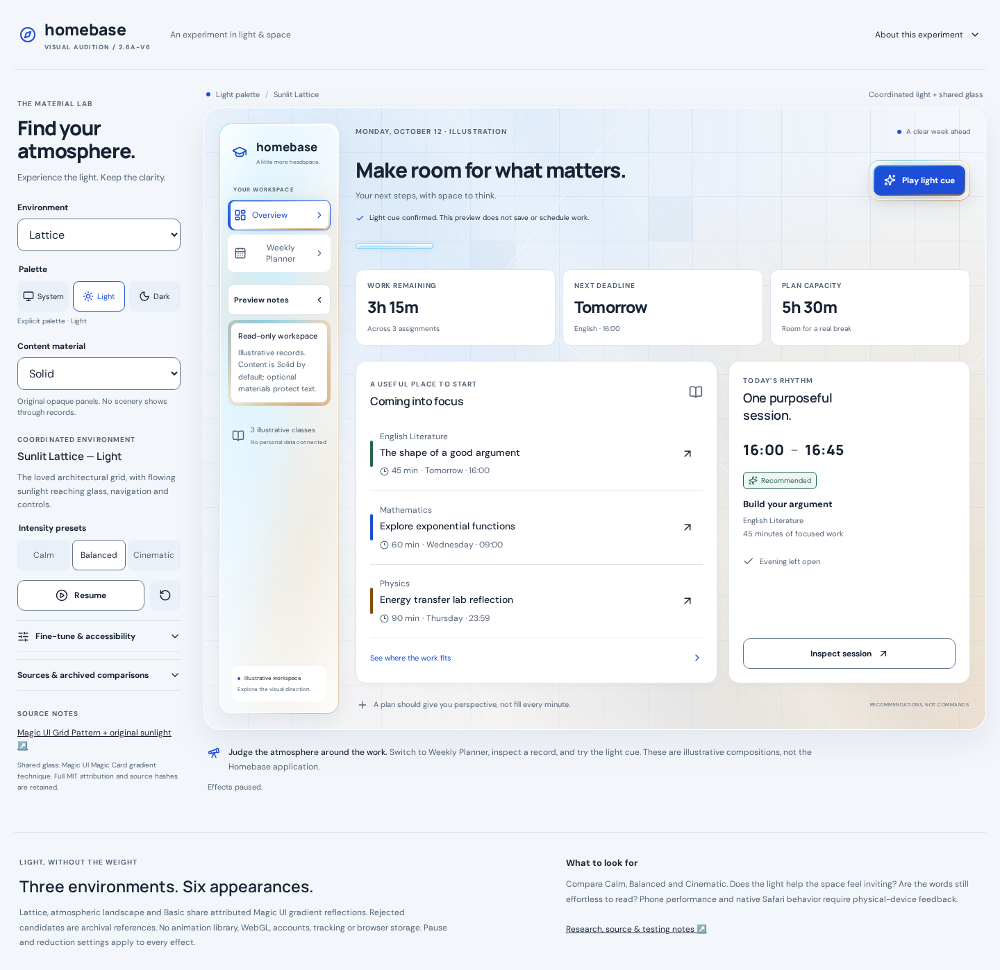
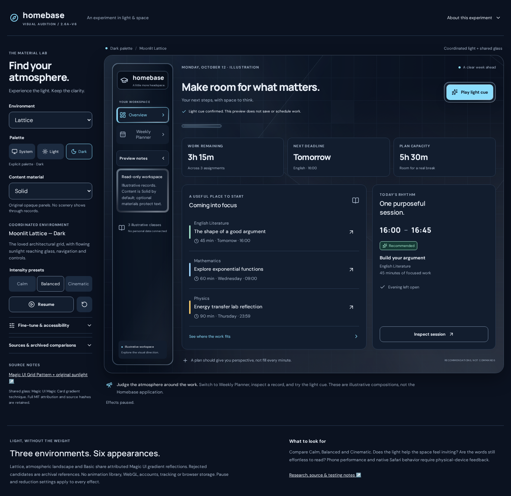
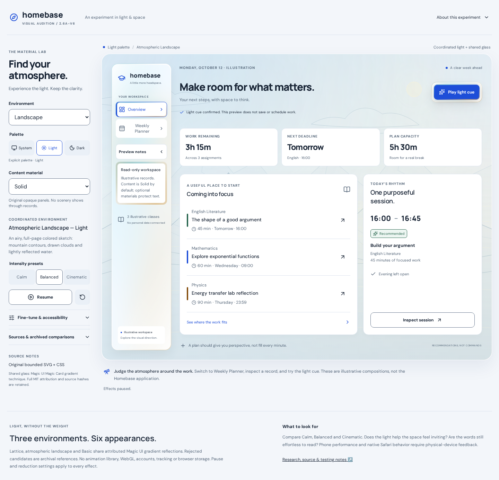
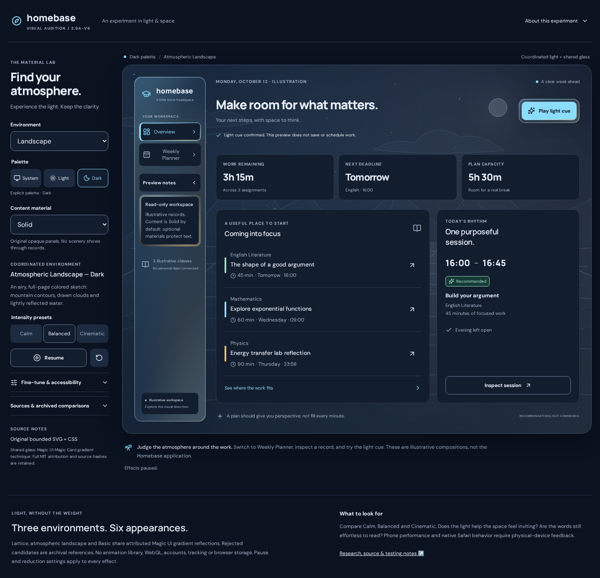
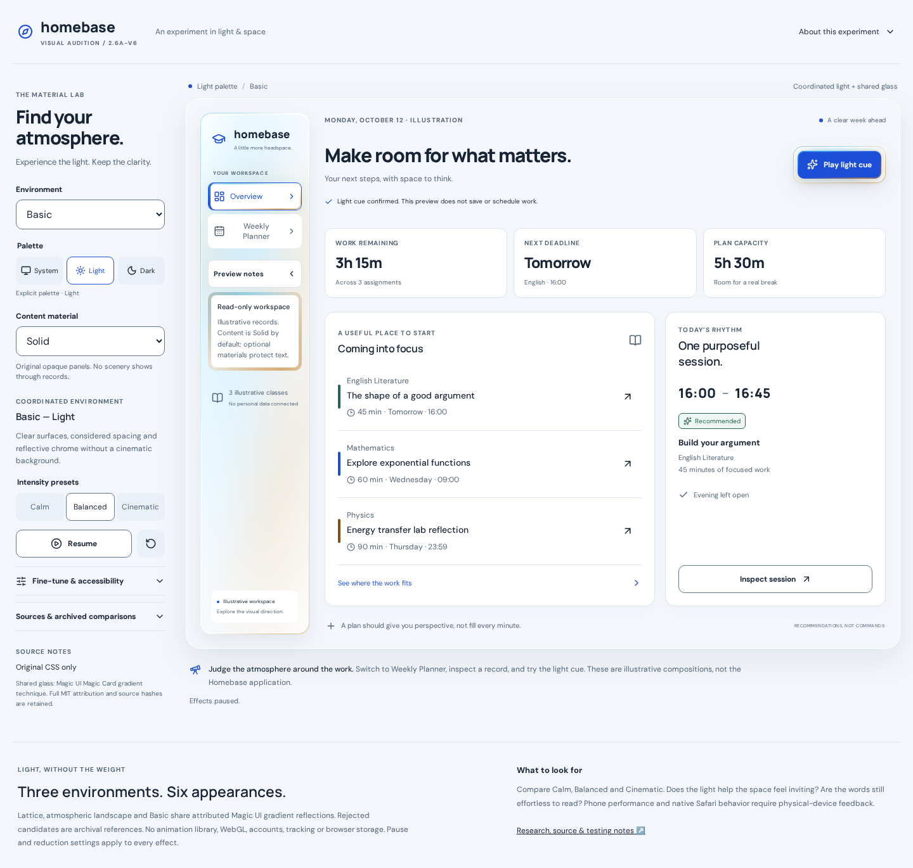
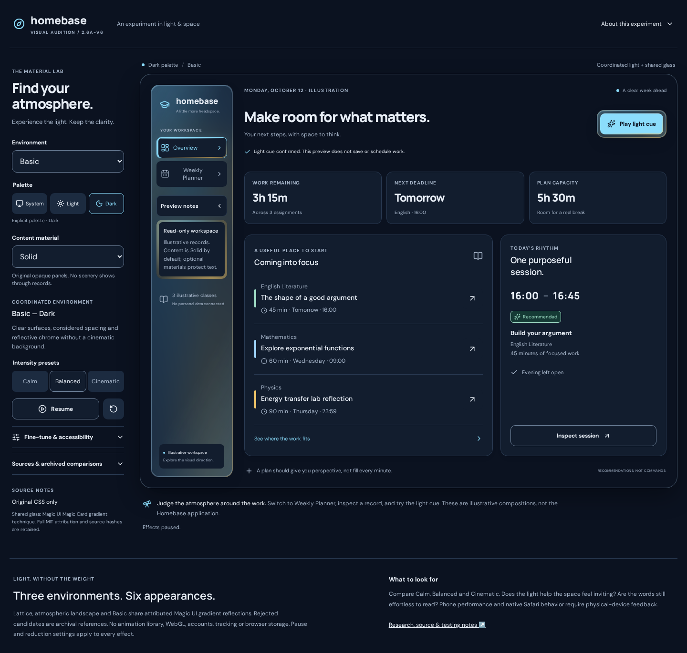
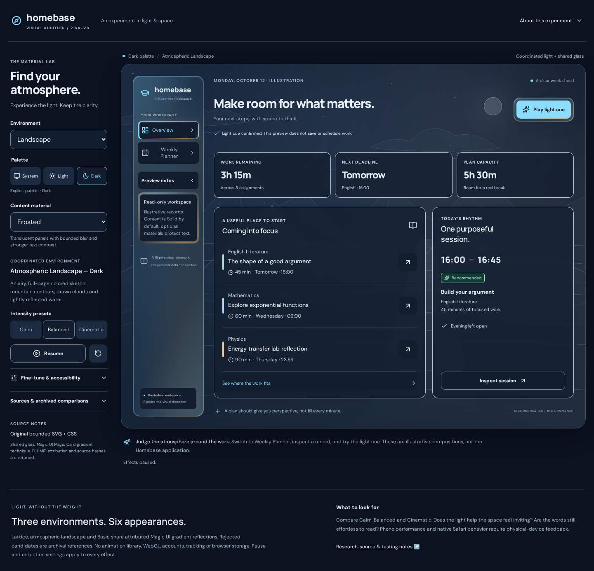
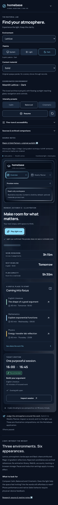
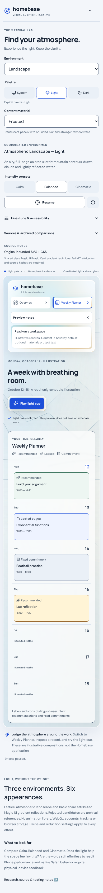
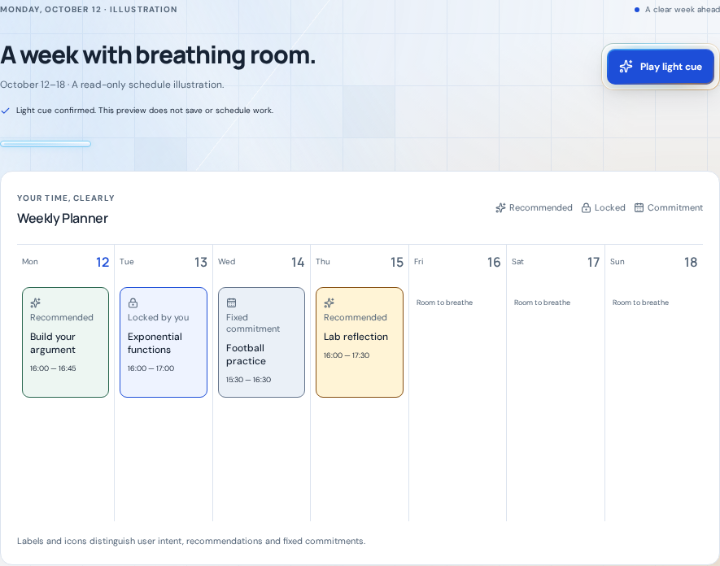
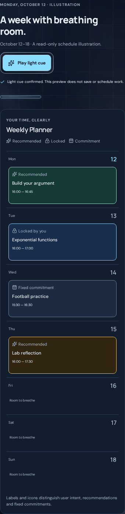
HOMEBASE / PHASE 2.6A / FINAL V6 REFERENCE
Selected exact-source screenshots from PR #15 at
0593c853596f47a5fbc4370b92f4e455bdef1a66. Approved visual direction; not a working
production redesign or a physical Safari test. Select an image to inspect its original size.










